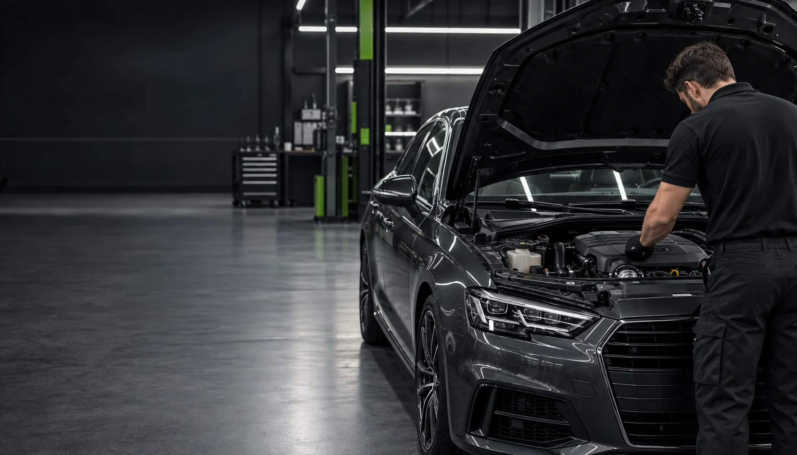
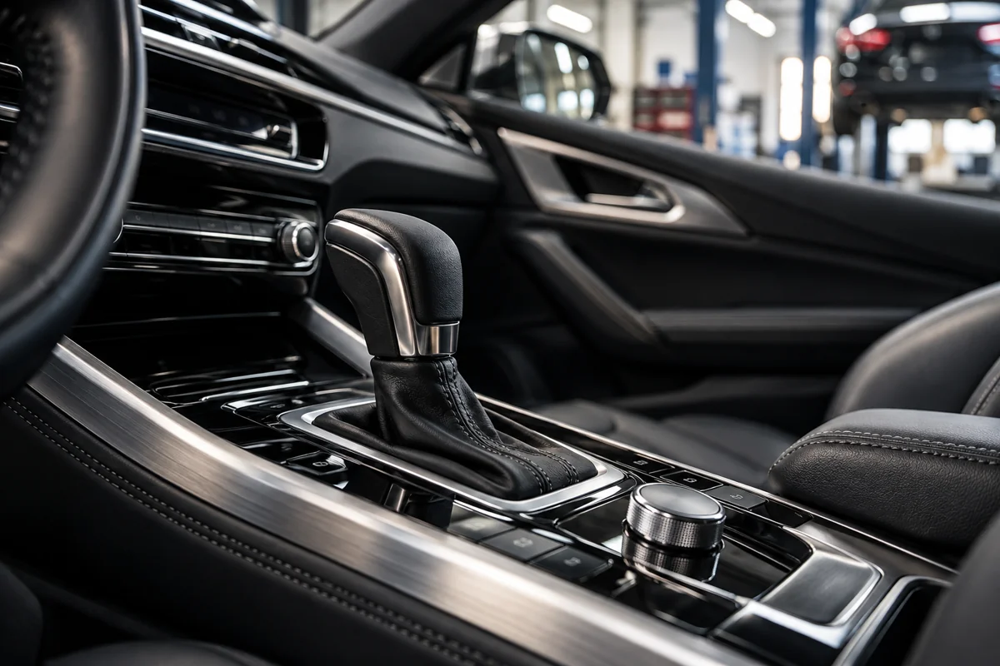
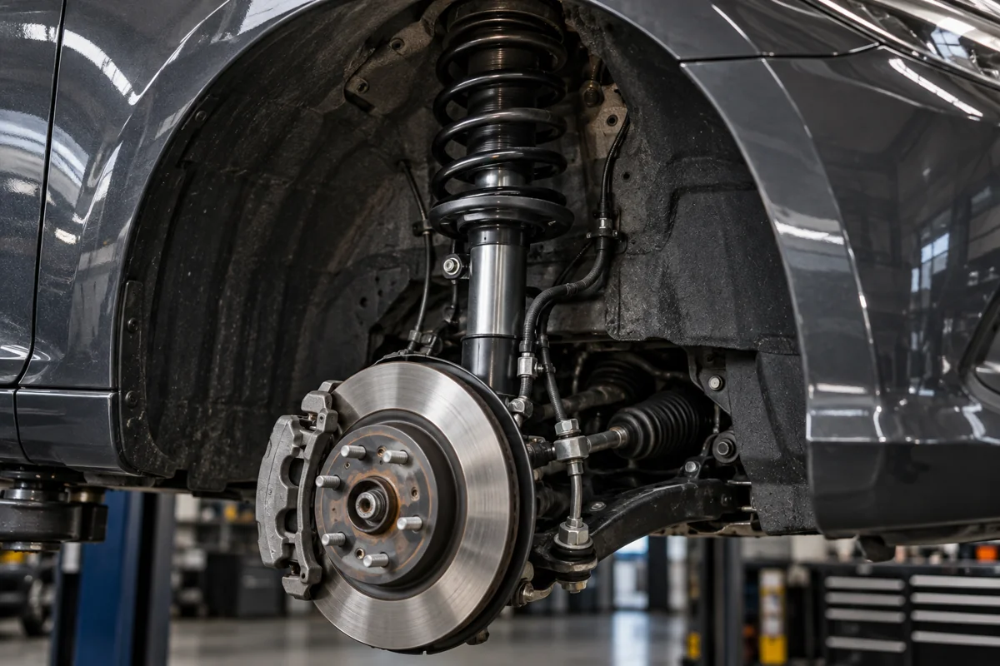
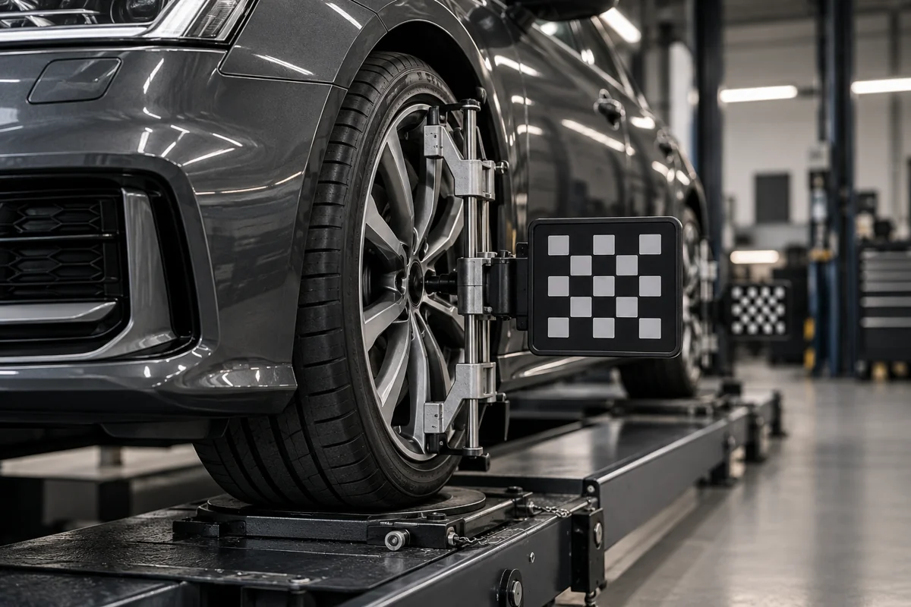
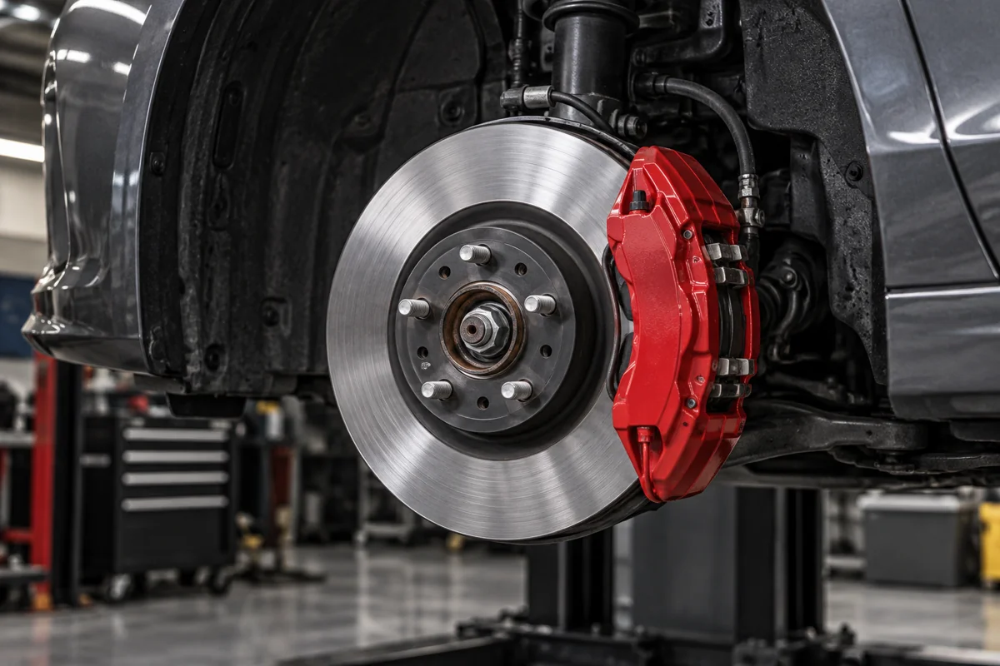
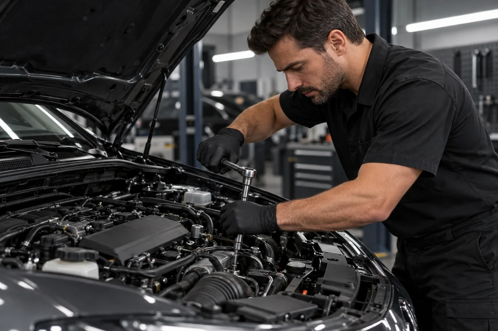
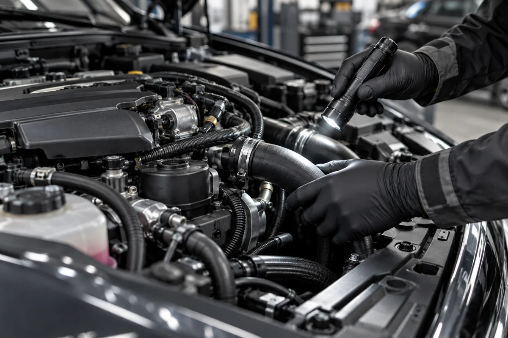
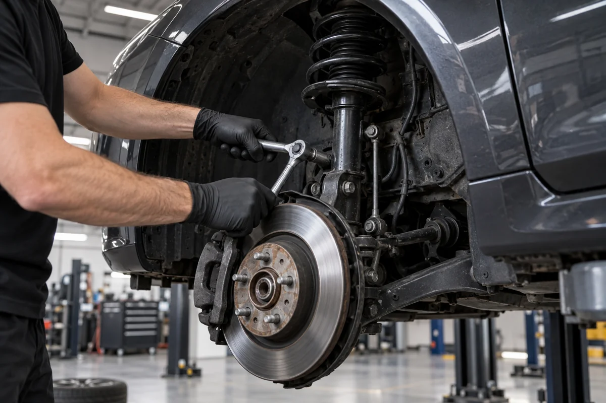
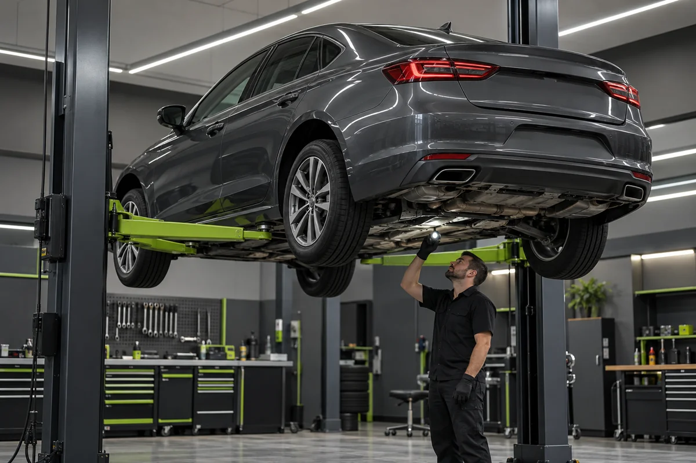
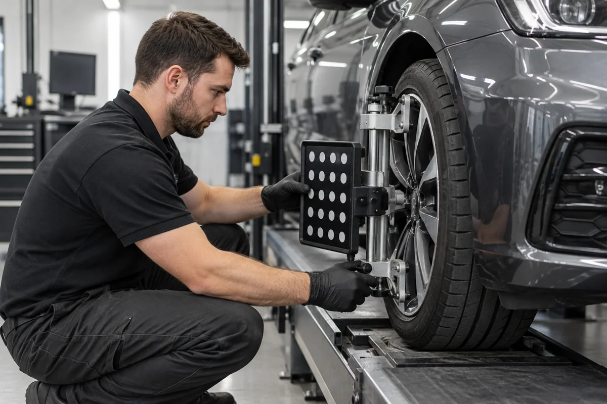

Agende
Fale com nossa equipe e escolha o melhor horário para trazer seu carro.

REMANO • CASCAVEL / PR
Mecânica geral e câmbio automático com atenção em cada detalhe. Seu carro merece esse cuidado.
SIMPLES, DO PRIMEIRO CONTATO À ENTREGA
Fale com nossa equipe e escolha o melhor horário para trazer seu carro.
Entenda o que seu veículo precisa e converse sobre os serviços indicados.
Conte com os cuidados da Remano para continuar seu caminho.
NOSSOS SERVIÇOS
Manutenção preventiva e corretiva.
Atenção ao que faz a diferença no seu dia a dia.

Trancos, ruídos ou dificuldade para engatar? Avalie os sinais e cuide da transmissão.
Consultar serviço
Mais estabilidade e conforto, com atenção aos amortecedores, molas e componentes.
Consultar serviço
Cuidado com a dirigibilidade, as vibrações no volante e o desgaste dos pneus.
Consultar serviço
Revisão dos componentes de frenagem para você dirigir com mais tranquilidade.
Consultar serviçoProteja o motor com a manutenção e o lubrificante adequados ao seu veículo.
Consultar serviço
Manutenção preventiva e corretiva, da avaliação aos cuidados do dia a dia.
Consultar serviçoNão sabe por onde começar? Conte o que está acontecendo com seu carro.
QUEM SOMOS
A Remano Centro Automotivo cuida do seu veículo com atenção, transparência e foco na segurança.
Estamos em Cascavel para ajudar você a manter seu carro em boas condições, com serviços de mecânica geral, câmbio automático e manutenção preventiva e corretiva.
Conversa clara sobre o seu veículo.
Cuidado em cada etapa do serviço.
Manutenção para o seu dia a dia.
ANTES DE SEGUIR VIAGEM
Cuide do carro hoje e planeje sua próxima viagem com mais tranquilidade.
GALERIA DE SERVIÇOS
Conheça os cuidados que fazem parte
da manutenção do seu veículo.

Revisão do motor
Cuidados com a suspensão
Inspeção do veículo
Alinhamento de direçãoImagens ilustrativas dos serviços.
ONDE ESTAMOS
Venha conversar com nossa equipe em Cascavel.
FALE COM A REMANO
Tire suas dúvidas, agende um atendimento ou solicite uma avaliação. Nossa equipe está a uma mensagem de distância.